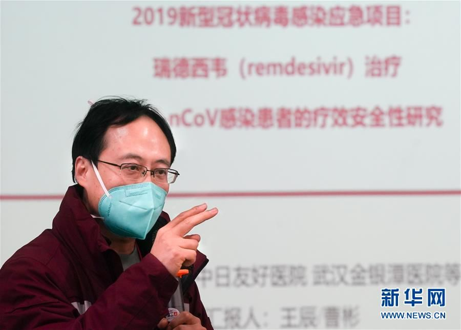

关于瑞德西韦，试验负责人曹彬首次透露重要信息
原文链接 备份链接 曹彬教授。图/新华视点 【编者按】新冠肺炎疫情暴发后，中日友好医院副院长、教育部“长江学者奖励计划”特聘教授曹彬是国家卫健委派到武汉的第一批专家。 在中华医学会呼吸病学分会、中国医师学会呼吸医师分会3月1日举办的一次连 …
瑞德西韦试验怎样了？对于这项举世瞩目的试验，项目主持人、中日友好医院副院长曹彬在 3 月 1 日的一次在线直播中透露了最新进展。
曹彬是国家专家组第一批成员。他于 2019 年 12 月 31 号下午来到武汉，3 月 1 日的直播节目也是在武汉金银潭医院进行的。
早在今年元旦当天，他就参与撰写了《武汉不明原因的病毒性肺炎的诊疗方案（试行版）》，后者也是第一版《新型冠状病毒肺炎诊疗方案》的基础。
在过去的十几年里，曹彬一直专注于社区获得性肺炎的研究。2019 年，他们发表了多项研究成果，其中一个就是对中国 13 个省的成人社区获得性肺炎，特别是病毒性肺炎的病毒谱，以及流感病毒肺炎和非流感病毒肺炎的发病情况、疾病严重程度和预后做了分析。新冠疫情期间，曹彬课题组牵头了3项临床研究，包括克力芝（洛匹拉韦/利托那韦）和2项瑞德西韦（瑞德西韦轻症或中症研究、瑞德西韦重症研究）。
曹彬透露，现在瑞德西韦重症组研究已经超过了 230 例，已经达到了中期分析所需要的样本量。另一项研究，克力芝临床研究已经正式结题，完成了 199 例前瞻、随机、对照临床试验。
 图 | 曹彬在直播中(来源：截屏)
图 | 曹彬在直播中(来源：截屏)
本文参考微信公众号“呼吸界”的直播文字，直播由中华医学会呼吸病学分会、中国医师学会呼吸医师分会共同主办。DeepTech 进行了重新梳理。以下回答环节的内容均来自曹彬。
问题1：为何选择瑞德西韦作为研究目标？
对于一种感染性疾病来说，氧疗、呼吸机、营养支持治疗、水电解质的平衡、预防的抗菌药物，以及有些医生推荐的激素，这都是辅助性的。最根本的就是对因治疗。
曹彬说，瑞德西韦这个药物进入其视野是在克力芝之后，也就是在 2020 年 1 月初，“在 1 月 9 日离开武汉之前，我就把我们的第 2 个目标锁定到瑞德西韦”。非常巧的是，当时刚刚有一篇文章在线发表在《自然.通讯》上，这是美国北卡罗来纳大学教堂山分校的一组医生做的动物实验，用 MERS 中东呼吸综合征冠状病毒（MERS）去感染小鼠，在动物实验当中，他们就观察了 2 个药，一个是克力芝+干扰素，沿用的 SARS 和 MERS 的治疗方案，另外一个药物就是瑞德西韦。
瑞德西韦能够保护小鼠、同样能降低肺的损伤，同样能降低小鼠的病死率，而且，瑞德西韦降低病毒滴度的能力是很显著的。
曹彬说，这给他们非常大的震撼，就是说，无论是 SARS 也好，MERS 也好，至少在动物模型上，他们所用的克力芝+干扰素方案的效果远远不如瑞德西韦。
2019 年 11 月《新英格兰医学杂志》发表了一项瑞德西韦的人体研究。这项人体研究是针对西非埃博拉病毒的，但这项研究给了曹彬信心，因为至少已经在人身上进行过瑞德西韦人体试验了，能够看得到药物安全性数据。
问题2：与克力芝研究相比，瑞德西韦重症组试验的研究特点是什么？
两者研究人群都是重症和危重症肺炎患者，但有一点不同，克力芝研究没有限定患者从发病到入组的时间，瑞德西韦重症组的研究设计较严格，因为抗病毒治疗应该尽早，所以就把抗病毒时间卡在了 12 天，即患者入组距离发病时间在 12 天之内。
这也是曹彬团队从流感病毒研究中得到的经验。如果那些已经住院 20 多天的患者再入组的话，即使患者最终治愈了，也无法确认是否为抗病毒药物起效。
曹彬说，“我们在进行瑞德西韦重症组的研究设计时，就把抗病毒时间卡在了 12 天，这时我们也非常纠结，到底是卡在 10 天好、还是 12 天好，还是 14 天好呢？这个抉择很难。”
问题3：如何选择研究的结局指标？
轻中症患者的设计和重症患者设计是完全不一样的，实际上这是两个完全不同的临床研究。
对于重症新冠肺炎，研究者关心的是“硬终点”，即患者致死、致残的结局。在重症瑞德西韦研究当中，复合终点指标中涵盖了 28 天病死率，但如果采用 28 天病死率，对样本量的需求是非常大的。所以瑞德西韦重症组设计的入组人数为 453 人。
对于轻症患者来说，虽然不排除有极少数的轻症病人转成重症，但研究者需要先了解哪些患者能够转变成重症，确定有重症危险因素的病人，然后把这个人群作为研究对象。入组标准必须符合2条，其一是轻症肺炎，其二是同时具备有可能转为重症的危险因素。
问题4：瑞德西韦试验中的中期分析是如何设计的？
与美国方案类似，实际上在中国瑞德西韦重症组研究当中，同样有中期分析的研究设计。中期分析不是由研究者分析的，它有一个独立的安全委员会或数据管理委员会来进行分析的，而且中国方案的独立委员会共有 5 个人，其中 2 位是国内专家，3 位是国外专家，包括美国 1 位、加拿大 1 位、英国 1 位。5 人中有 3 位是统计学方面的，另2位是临床专家，他们从后台可以看到数据从而进行评判。
独立委员会成员还可以有计划地查看项目进展、实时观察两组之间的疗效差异。
**曹彬说，虽然实际上是随机安慰剂对照双盲的，但是其效果有可能会呈现出离散度越来越大的态势。“如果瑞德西韦是有效的，那么离散度会越来越显现出来。”
**
对于该研究有 3 种可能，其一是，瑞德西韦不良反应造成了病人意外的死亡，所以死亡率会增加；其二是瑞德西韦有效，病死率下降。但这种差别必须当入选病例积累到一定程度的时候，独立委员会在后台才能看到这样的差距。第三种可能性是瑞德西韦无效也无害。如果证实瑞德西韦有效的话，这个试验就停止了，所有的病人就都建议使用瑞德西韦。如果是另外一种情况，副作用特别大，也必须叫停实验，这个药就被“枪毙”掉了，以后再也不允许瑞德西韦在人体当中开展临床研究。
问题5：瑞德西韦试验有哪些最新结果？
现在瑞德西韦重症组研究已经超过了 230 例，已经达到了中期分析所需要的样本量。但入组不代表就可以进行评价了，还需要 28 天的随访。这并不是说一定是 28 天，因为只要达到临床结局就可以进行评价。
“做为研究者，我们也很期待——这 230 多个病人都达到到临床结局的时候，能不能出现一个节点？这个节点就能够让独立安全委员会作出一个客观的、科学的评价，如果真能达到这样一个结局时，我们就不需要入组 453 例病人了，有可能入组 400 例或者 300 例就可以了。”
问题6：如何看待循证治疗和临床研究的关系？
临床研究实际上也是临床工作，只不过在临床研究工作当中，严格地限定了研究用药能用还是不能用，而且也限定了对照组或所有人群都要按照同一个标准规范来进行。
“我觉得对任何一位医生来说，参加临床研究的话，必须要作出服从标准的承诺和保证，这就限定了临床医生一些特别个性化的处方、处置，而医生的这些个性化的处方常常是缺乏循证医学证据的。”
曹彬强调，“我不反对将有循证医学的治疗加入到临床实践当中，但是如果是没有经过证实的，若要参加临床试验，那必须服从标准，不允许过度使用一些未经证实的治疗手段或药物。”
问题7：如何认识新冠疫情期间的循证治疗？
曹彬说，在做克力芝随机对照双盲之前，他们实际上已经观察到克力芝对 20 多例是有效的，但是，“如果我们继续观察 20 例，可能又是无效的”。
因此，要想回答每种疗法有效性的问题时，必须进行前瞻性随机对照研究。
“我们为什么能够锁定克力芝和瑞德西韦这两个药呢？就是因为看书、看文献，如果不读书、不读文献的话，怎么会知道这个世界上还有这两种药物呢？我觉得这是第一步的要求。”
第二个要求是怀疑。
“千万千万不能听说某种药有效，就敢给病人普遍临床应用。做为一个受过医学训练的人，贸然用药是很可怕的一件事情。”“我们在对医学生、进修医生的培养教育方面，经常反复说一件事，就是工作时间长不代表有经验。事实上，我们经验的积累一定是在循证的基础上建起来的。因为我们专业主要是做肺炎方面，例如，一个医疗组 1 个月间收治了 100 个病人，这 100 个患者中，有几个真真正正能够把故事讲清楚的？病原学明确了吗？根据病原学药敏结果用药，患者是否像预期结果一样治疗好了？而且临床表现是不是和我们所掌握的基本规律是一致的？”
曹彬说，哪怕一个月管的 100 个患者中只有 1 个病人有循证医学证据，那就是非常宝贵的经验。
这1个病人才叫经验，你管理其他 99 个病人都不会获得有价值的经验，而且有可能还把错误的经验当经验了，那就更加会伤害你的下一个病人。
曹彬介绍

图 | 2 月 5 日，瑞德西韦临床试验项目负责人、中日友好医院副院长曹彬教授讲解瑞德西韦项目内容。（来源：新华社）
曹彬，主任医师，教授，博士研究生导师，教育部长江学者特聘教授，国家杰出青年科学基金获得者。中日友好医院副院长，呼吸中心常务副主任，中国医学科学院呼吸病学研究院副院长。中华医学会呼吸病学分会候任主任委员，中华医学会呼吸病学分会感染学组副组长等，享受国务院政府特殊津贴。国家发明专利1项。
DeepTech关于新冠肺炎的系列报道（上下滑动可见全部报道）：
新冠病毒产生149个突变和2个亚型，需要担心传染性和毒性改变吗？
中国延缓了病毒的全球传播，各国公卫比拼才刚刚开始 | 专访北大宁毅
7万例！中国疾控中心发迄今最大新冠病例分析：3019名医护感染，首次描述肺炎发病流行曲线
新冠疫情最终结局是什么，会成为全球大流行吗？多位权威专家：病毒可能与人类长期共存
新冠病毒进化成 “信息疫情”：次生灾害丛生，恐慌和种族主义泛滥
中国疾控中心原副主任：反思此疫，中国疾控该改革了 | 独家专访
截口罩、“歧视”湖北人、专家自打脸……疫情下的中国公共卫生要补哪些课？|独家专访
新冠病毒疫苗上市最短6个月，最长10年｜独家采访美国生物医疗巨头Moderna
新冠病毒阴谋论疑云：“病毒非自然形成”，印度学者研究被哈佛大牛批“不靠谱”
双黄连一夜全网脱销，美国首例病情缓解则靠这个药！中国有望能用上
世卫组织正式将武汉肺炎定性为“国际关注的突发公共卫生事件”！
病毒“人传人”去年12月中旬或已发生？武汉肺炎传播性、致死率暂低于SARS，两大医学顶刊发布相关患者数据
抗击武汉肺炎最佳药物现身？《科学》杂志：一种在研抗埃博拉药物最有希望
无症状病例已现！到底是谁把新冠病毒带到了武汉？科学家加速病毒溯源
疫苗研发能否跑赢武汉肺炎？mRNA技术“高调登场”，全球科研力量投入新型疫苗研发
德国教授真有武汉肺炎“神药”？“最强抑制剂”从未进行人体测试！全球学者投入武汉肺炎治疗技术战
武汉封城能否防止超级传播者？世卫：定性“突发公共卫生事件”仍需更多信息
武汉肺炎首场国家新闻发布会：病毒存在变异可能，疫情存在进一步扩散风险
武汉实施进出管控！迄今肺炎疫情最权威声音，钟南山表示须警惕春运超级传播者
冠状病毒的暴发并非偶然？研究显示：病毒“溢出”现象或已悄然发生多年
瑞德西韦遭遇患者样本不足，“人民的希望”淹没在271项研究中
武汉一线专家详解新冠肺炎死亡病例：他们是窒息而死，过程很痛苦 | 独家专访

原文链接 备份链接 曹彬教授。图/新华视点 【编者按】新冠肺炎疫情暴发后，中日友好医院副院长、教育部“长江学者奖励计划”特聘教授曹彬是国家卫健委派到武汉的第一批专家。 在中华医学会呼吸病学分会、中国医师学会呼吸医师分会3月1日举办的一次连 …
原文链接 备份链接 科研界正展开一场与病毒的赛跑，希望在最短时间内找到特效药物。根据中国临床试验注册中心统计，截至2月27日凌晨，已有271项新冠肺炎（COVID-19）相关临床试验已经或即将开展，除被推荐可能有效的抗病毒药物外，各类中 …
原文链接 备份链接 早在 2 月 4 日，吉利德的 2843 箱瑞德西韦药物就已经运抵北京，时至今日人们却听到了入组患者太少的消息，“人民的希望”被浇了一头冷水。 瑞德西韦是被世界卫生组织认为是目前唯一可能抗击新冠病毒的药物。“人民的希 …
原文链接 备份链接 新冠肺炎患者因何而死？死亡特征是什么？ 2 月 26 日，预印本期刊 MedRxiv 发表了来自武汉大学人民医院的论文《25 例新冠病毒肺炎死亡患者的临床分析：中国武汉单中心的回顾性研究》试图回答此问题，论文通讯作者系 …
原文链接 备份链接 随着新冠肺炎（COVID-19）感染病例在近日突破 70,000 大关、中国疾控中心发迄今最大新冠病例分析、首次描述肺炎发病流行曲线，越来越多的新冠疫情爆发细节浮出水面。 与此同时，先前颇有群众基础的新冠病毒人为干预流 …